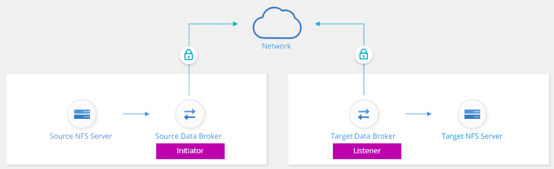

Solicitar cambios en el documento
Solicitar cambios en el documento Editar en GitHub
Editar en GitHub Guía del colaborador
Guía del colaboradorSincronizando los datos NFS mediante el cifrado de datos en tránsito
Colaboradores
Si su negocio tiene políticas de seguridad estrictas, puede sincronizar datos NFS mediante el cifrado de datos en tránsito. Esta función es compatible desde un servidor NFS a otro servidor NFS y de Azure NetApp Files a Azure NetApp Files.
Por ejemplo, se recomienda sincronizar datos entre dos servidores NFS que se encuentran en redes diferentes. O puede que necesite transferir datos de Azure NetApp Files de manera segura en subredes o regiones.
Cómo funciona el cifrado de datos en tiempo real
El cifrado en tiempo real de los datos cifra los datos NFS cuando se envían a través de la red entre dos gestores de datos. La siguiente imagen muestra una relación entre dos servidores NFS y dos agentes de datos:

Un agente de datos funciona como el initiator. Cuando es hora de sincronizar datos, envía una solicitud de conexión al otro intermediario de datos, que es el listener. Ese agente de datos escucha las solicitudes en el puerto 443. Puede utilizar un puerto diferente, si es necesario, pero asegúrese de comprobar que el puerto no está en uso por otro servicio.
Por ejemplo, si sincroniza datos de un servidor NFS local con un servidor NFS basado en cloud, puede elegir el agente de datos que escucha las solicitudes de conexión y que las envía.
Así es como funciona el cifrado en tránsito:
-
Después de crear la relación de sincronización, el iniciador inicia una conexión cifrada con el otro agente de datos.
-
El agente de datos de origen cifra los datos del origen mediante TLS 1.3.
-
A continuación, envía los datos a través de la red al agente de datos de destino.
-
El agente de datos de destino descifra los datos antes de enviarlos al destino.
-
Después de la copia inicial, el servicio sincroniza los datos modificados cada 24 horas. Si hay datos que sincronizar, el proceso comienza con el iniciador abriendo una conexión cifrada con el otro agente de datos.
Si prefiere sincronizar datos con mayor frecuencia, "se puede cambiar la programación después de crear la relación".
Versiones NFS compatibles
-
En los servidores NFS, el cifrado de datos en tránsito es compatible con las versiones 3, 4.0, 4.1 y 4.2 de NFS.
-
En Azure NetApp Files, el cifrado de datos en tiempo real es compatible con las versiones 3 y 4.1 de NFS.
Limitación del servidor proxy
Si crea una relación de sincronización cifrada, los datos cifrados se envían a través de HTTPS y no se pueden enrutar a través de un servidor proxy.
Lo que necesitará para comenzar
No olvide disponer de lo siguiente:
-
Dos servidores NFS que cumplen "requisitos de origen y objetivo" O Azure NetApp Files en dos subredes o regiones.
-
Las direcciones IP o los nombres de dominio completos de los servidores.
-
Ubicaciones de red para dos agentes de datos.
Puede seleccionar un agente de datos existente pero debe funcionar como iniciador. El agente de datos del listener debe ser un agente de datos new.
Si desea utilizar un grupo de Data broker existente, el grupo debe tener sólo un agente de datos. No se admiten varios gestores de datos en un grupo con relaciones de sincronización cifradas.
Si aún no ha implementado un agente de datos, revise los requisitos de Data Broker. Debido a que tiene directivas de seguridad estrictas, asegúrese de revisar los requisitos de red, que incluyen tráfico saliente desde el puerto 443 y el "puntos finales de internet" que el agente de datos se pone en contacto con.
Sincronizando los datos NFS mediante el cifrado de datos en tránsito
Cree una nueva relación de sincronización entre dos servidores NFS o entre Azure NetApp Files, habilite la opción de cifrado en curso y siga las indicaciones.
-
Haga clic en Crear nueva sincronización.
-
Arrastre y suelte servidor NFS a las ubicaciones de origen y destino o Azure NetApp Files a las ubicaciones de origen y destino y seleccione Sí para activar el cifrado de datos en vuelo.
-
Siga las indicaciones para crear la relación:
-
NFS Server/Azure NetApp Files: Elija la versión NFS y, a continuación, especifique un nuevo origen NFS o seleccione un servidor existente.
-
definir la funcionalidad de Data Broker: Defina qué intermediario de datos escucha las solicitudes de conexión de un puerto y cuál inicia la conexión. Elija en función de sus requisitos de red.
-
Data Broker: Siga las indicaciones para agregar un nuevo intermediario de datos de origen o seleccionar un intermediario de datos existente.
Tenga en cuenta lo siguiente:
-
Si desea utilizar un grupo de Data broker existente, el grupo debe tener sólo un agente de datos. No se admiten varios gestores de datos en un grupo con relaciones de sincronización cifradas.
-
Si el agente de datos de origen actúa como oyente, debe ser un nuevo agente de datos.
-
Si necesita un nuevo agente de datos, Cloud Sync le pedirá las instrucciones de instalación. Puede desplegar el agente de datos en el cloud o descargar un script de instalación para su propio host Linux.
-
-
directorios: Elija los directorios que desea sincronizar seleccionando todos los directorios, o taladrando y seleccionando un subdirectorio.
Haga clic en Filtrar objetos de origen para modificar la configuración que define cómo se sincronizan y mantienen los archivos y carpetas de origen en la ubicación de destino.

-
servidor NFS de destino/Azure NetApp Files de destino: Elija la versión NFS y, a continuación, introduzca un destino NFS nuevo o seleccione un servidor existente.
-
Target Data Broker: Siga las indicaciones para agregar un nuevo intermediario de datos de origen o seleccionar un intermediario de datos existente.
Si el agente de datos de destino actúa como oyente, debe ser un nuevo agente de datos.
A continuación se muestra un ejemplo del mensaje en el que el agente de datos de destino funciona como el listener. Observe la opción para especificar el puerto.

-
directorios de destino: Seleccione un directorio de nivel superior o examine para seleccionar un subdirectorio existente o crear una nueva carpeta dentro de una exportación.
-
Configuración: Defina cómo se sincronizan y mantienen los archivos y carpetas de origen en la ubicación de destino.
-
Revisión: Revise los detalles de la relación de sincronización y haga clic en Crear relación.

-
Cloud Sync comienza a crear la nueva relación de sincronización. Cuando haya terminado, haga clic en Ver en Panel para ver detalles sobre la nueva relación.